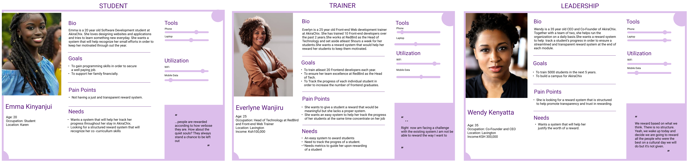

PRODUCT REQUIREMENT DOCUMENT
Objectives/goals of Choin project
Choin is a group that ensures that students at AkiraChix are fairly awarded in regards to the matrices. We are to create a web platform that will help students redeem Choin for the available rewards if activated by the admin and trainers being able to reward students. From the research, we conducted it was evident that awards were being given to the loudest students and leaving others un beneficiary of the rewards.
We structure our development into 2 sections that align with the Product :
Problem stage: Where the problem was clearly articulated to get to understand the problem we want to solve. Development /solution stage: There was how the system would look like and the inclusion of the wanted features.
Problem stage
We started by conducting research where there was a “why” question which was an initiative to define and understand the problem. So we spent a good amount of time researching the problem solution to have an understanding of the problem we are solving at the end. For this reason, Much time was spent defining the problem as determining the solution. This was the problem statement that was like a guide and enabled us to set goals and objectives for research: “How might we create a system to ensure efficiency in rewarding to promote trust and transparency within AkiraChix?”
Approximate Timeline
with the time allocations clearly defined below. Afterwards, data analysis will be done to verify the data and statistics at hand.
- Research start date: Saturday, June 30th
- Research plan creation and review: Monday, August 2nd
- Recruitment begins: Thursday, Wednesday 4th
- Piloting study: Monday 8th August(Questionnaires)
- Pilot study: Tuesday 10th August(Pilot study)
- Pilot study: Friday 12th August(Interview Layout/Scope)
- The pilot study ends: Saturday 13th August
- Interviewing begins: Monday, August 15th
- Interviewing ends/Questionnaires: Tuesday, August 16th
- Questionnaires distribution: Wednesday, August 17
- Data Collection: Thursday, August 18
- Data analysis: Friday, August 19
Product users

Useflow
 Low-Fidelity Wireframes
Low-Fidelity Wireframes
 High-Fidelity Wireframes
High-Fidelity Wireframes

Material to be used :
- Python
- Django
- Wireframes
Estimate time for the development
It has been estimated that the development will take approximately one month to be completed and testing done after every sprint done and completed.